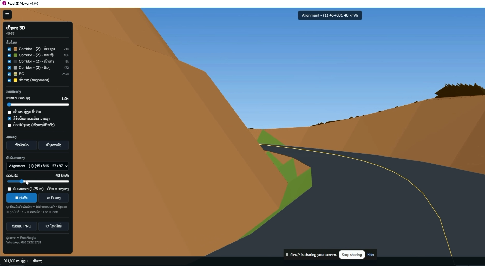

ຟຣີ CIVIL 3D
Road3DViewer
ເບິ່ງຖະໜົນທີ່ອອກແບບໃນ Civil 3D ເປັນ 3D ໃນໜ້າຕ່າງຂອງມັນເອງ, ໝຸນເບິ່ງໄດ້ລື່ນ ບໍ່ໜ່ວງ. ໃຊ້ຟຣີ.

ຮູບຕົວຢ່າງແບບເກົ່າ ທຽບກັບ ໃຊ້ Add-in
ວຽກດຽວກັນ, ໃຊ້ເວລາໜ້ອຍລົງ ແລະ ຜິດພາດໜ້ອຍລົງ.
ແຕ້ມດ້ວຍມື
- ເບິ່ງ 3D ໃນ AutoCAD ໜ່ວງ ເມື່ອແບບໃຫຍ່
- ໝຸນເບິ່ງບໍ່ລື່ນ
ໃຊ້ Road3DViewer
- ໜ້າຕ່າງ 3D ແຍກຕ່າງຫາກ, ໂຫຼດໄວ
- ໝຸນ ແລະ ຊູມເບິ່ງໄດ້ລື່ນ
ຄຸນສົມບັດ
ສິ່ງທີ່ Add-in ນີ້ເຮັດໃຫ້ທ່ານ.
ເບິ່ງຖະໜົນເປັນ 3D
ສະແດງ Corridor ແລະ Surface ທີ່ອອກແບບໃນ Civil 3D.
ໜ້າຕ່າງ 3D ຂອງຕົວເອງ
ບໍ່ໃຊ້ການເບິ່ງ 3D ຂອງ AutoCAD, ຈຶ່ງລື່ນ ບໍ່ໜ່ວງ.
ໃຊ້ຟຣີ
ບໍ່ຕ້ອງມີ License Key.
ຕິດຕັ້ງງ່າຍ
MSI Setup, ປຸ່ມຢູ່ໃນແຖບ CH Tool.
ວິທີໃຊ້
ຈາກເປີດ ຈົນໄດ້ຜົນ.
ດາວໂຫຼດ
ກົດປຸ່ມ ດາວໂຫຼດຟຣີ.
ຕິດຕັ້ງ
ເປີດ MSI Setup ແລ້ວເປີດ Civil 3D ໃໝ່.
ເປີດ
ກົດປຸ່ມ Road3DViewer ໃນແຖບ CH Tool.
ເບິ່ງ
ໝຸນ ແລະ ຊູມເບິ່ງຖະໜົນ 3D.
ລາຍລະອຽດ
ຂໍ້ມູນທາງເຕັກນິກ ແລະ ໂປຣແກຣມທີ່ໃຊ້ໄດ້.
ໃຊ້ໄດ້ກັບ
C3D
Civil 3D2018, 2019, 2020, 2021, 2022, 2023, 2024, 2025, 2026, 2027
ຄຳຖາມທີ່ພົບເລື້ອຍ
ກົດຄຳຖາມເພື່ອເບິ່ງຄຳຕອບ.
ຟຣີແທ້ບໍ?
ແທ້. ດາວໂຫຼດ ແລະ ໃຊ້ໄດ້ເລີຍ, ບໍ່ຕ້ອງມີ License Key.
ດາວໂຫຼດແລ້ວເຮັດແນວໃດ?
ເປີດໄຟລ໌ Setup, ຕິດຕັ້ງ, ແລ້ວເປີດ Civil 3D ໃໝ່. ປຸ່ມຈະຢູ່ໃນແຖບ CH Tool.
ມີຄົນຊ່ວຍເຫຼືອບໍ ຖ້າໃຊ້ບໍ່ເປັນ?
ມີ. ທັກ WhatsApp ສົ່ງຮູບໜ້າຈໍມາ, ຜູ້ພັດທະນາຕອບເອງ.
ດາວໂຫຼດ ແລະ ສອບຖາມ
ທິບພະຈັນ ພູໄຊ · ຜູ້ພັດທະນາ
020 22223752